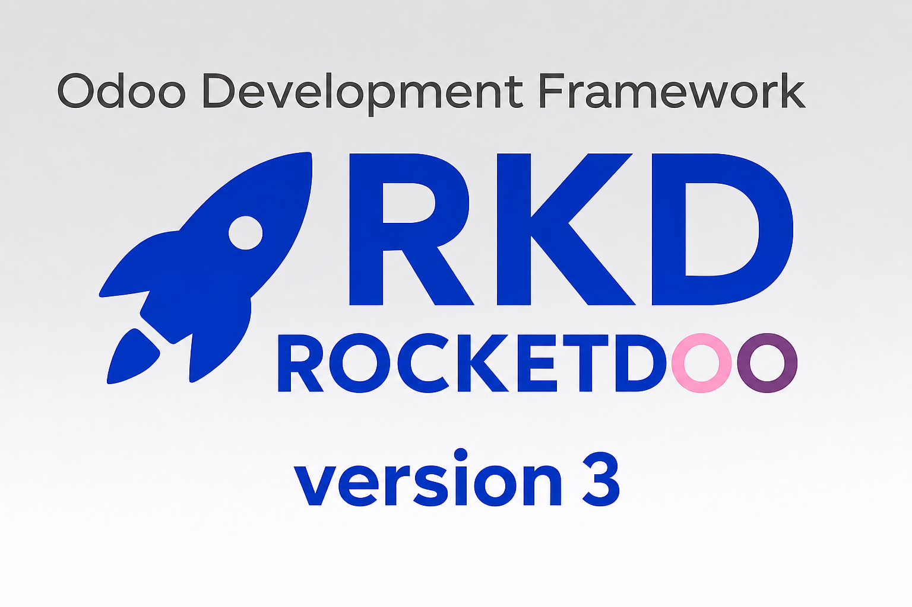

¡Bienvenido a RKD como ROCKETDOO!
Versión 3 de ROCKETDOO — ahora con Interfaz Gráfica, integración Mailpit, reverse proxy Traefik y despliegue completo de instancias en VPS.

Rocketdoo es un framework desarrollado en Python que tiene como objetivo proporcionar un entorno de desarrollo rápido y eficiente.
Con Rocketdoo podrás desplegar, en simples pasos, uno o varios entornos para desarrollar en Odoo, en todas sus ediciones y versiones.
Te permitirá crear nuevos módulos o funcionalidades tanto para la edición Enterprise como para la edición Community.
Novedades en la versión 3 de ROCKETDOO
La versión 3 es la entrega más completa de ROCKETDOO hasta la fecha. Conserva todo lo de la versión 2 y agrega cuatro grandes capacidades nuevas:
🖥️ Interfaz Gráfica (GUI)
Rocketdoo v3 incluye su propia GUI web, que se lanza directamente desde la terminal con un solo comando:
La GUI se abre en tu navegador en http://localhost:8070 y ofrece:
- Dashboard — resumen del proyecto con estado de contenedores, versión de Odoo, PostgreSQL y accesos rápidos.
- Control de contenedores — iniciar, detener, reiniciar, construir, descargar y eliminar contenedores sin escribir comandos Docker.
- Visor de logs en vivo — streaming en tiempo real de los logs de cualquier contenedor.
- Mail (Mailpit) — activar/desactivar el servicio de pruebas de email desde la interfaz.
- Módulos — listar y gestionar módulos add-on de Odoo.
- Deploy — ejecutar operaciones de despliegue desde la GUI.
- Instance — gestionar los destinos de despliegue en VPS.
- Pack / Unpack — compartir o restaurar entornos completos de desarrollo.
- Gitman — gestionar dependencias de repositorios de terceros.
- Traefik — configurar la integración del reverse proxy.
- Modo oscuro y claro — alternar el tema según tu preferencia.
📧 Testing de Email con Mailpit (rkd mail)
El nuevo comando mail integra Mailpit — un servidor SMTP local con interfaz web que captura todos los emails salientes de Odoo en lugar de enviarlos.
rkd mail on # Activar Mailpit y configurar SMTP en Odoo
rkd mail off # Desactivar Mailpit y restaurar los valores por defecto
rkd mail status # Ver el estado actual
rkd mail open # Abrir la interfaz web de Mailpit en el navegador
🌐 Reverse Proxy Traefik (rkd traefik)
El comando traefik facilita exponer tu instancia local de Odoo con un dominio personalizado, tanto para desarrollo local como para producción con HTTPS y Let's Encrypt.
rkd traefik on # Configuración interactiva: dominio, modo (local/producción)
rkd traefik off # Quitar la integración Traefik del proyecto
rkd traefik status # Ver la configuración actual de Traefik
rkd traefik guide # Guía paso a paso para configurar dominios locales
🚀 Despliegue Completo en VPS (rkd instance)
El comando instance permite desplegar una instancia completa de Odoo en un VPS, ya sea como contenedor Docker o instalación nativa, mediante un asistente interactivo.
rkd instance init # Configurar entornos stage/prod de forma interactiva
rkd instance deploy --env stage # Desplegar en staging
rkd instance deploy --env prod # Desplegar en producción
rkd instance status # Ver los destinos de despliegue configurados
Desde la Versión 2 — Todo Disponible
Todas las funcionalidades de ROCKETDOO v2 se mantienen intactas:
rkd scaffold/rkd init— scaffolding del proyecto y asistente de configuración.rkd up,rkd down,rkd restart,rkd stop,rkd build,rkd status,rkd logs— gestión de contenedores Docker.rkd pack/rkd unpack— compartir y restaurar entornos completos.rkd del -i— limpiar archivos.Identifiergenerados por WSL2.rkd deploy— despliegue de módulos a Odoo SH, VPS o instancias dockerizadas.
En la siguiente página encontrarás todos los detalles sobre los despliegues con rkd. >>> Despliegue
¡Rocketdoo v3 es más potente y fácil de usar que nunca!
Descripción General
Esta herramienta fue diseñada para desarrolladores que están comenzando con Odoo, así como para aquellos con más experiencia que buscan desplegar sus entornos rápidamente y centrarse únicamente en crear nuevos módulos y funcionalidades.
Es importante destacar que Rocketdoo es una herramienta más dentro del ecosistema de desarrollo en Odoo. No pretende ser la única ni la mejor opción, sino una solución práctica que busca aportar valor, cubrir necesidades comunes del proceso de desarrollo y al mismo tiempo optimizar y automatizar el tiempo de trabajo de un desarrollador.
Sabemos que el ERP Odoo es un sistema amplio, con gran alcance y complejidad. Según el cliente, la necesidad o la localización a implementar en el sistema, es necesario contemplar una serie de requerimientos que van más allá del desarrollo en sí. Estos requisitos adicionales pueden incluir bibliotecas necesarias en Python, dependencias específicas para ciertas funcionalidades, módulos de terceros, o repositorios externos que permitan afrontar exitosamente un desarrollo.
Todo este conjunto de requerimientos y configuraciones suele ser una verdadera carga para los desarrolladores.
Por estas razones nace la idea de crear un entorno automatizado e intuitivo, que sirva tanto a desarrolladores individuales como a equipos de trabajo. Rocketdoo alivia la tarea de iniciar un entorno de desarrollo y permite enfocarse en lo esencial: desarrollar nuevos módulos o funcionalidades.
Descripción
Para comprender mejor qué es Rocketdoo y cómo utilizarlo correctamente, daremos una breve descripción de las herramientas necesarias y cómo usarlas.
Primero, debemos mencionar que Rocketdoo fue pensado y desarrollado para crear entornos de desarrollo en sistemas operativos Linux, en sus diferentes distribuciones, como Ubuntu o Debian. Consideramos que es el sistema más adecuado para trabajar con este framework por las siguientes razones.
Rocketdoo utiliza las siguientes herramientas para cumplir su función:
- Docker y Docker Compose.
- Git y GitHub (o cualquier gestor de control de versiones).
- Llave SSH para gestión de repositorios privados.
- Gitman.
- Python y su gestor de paquetes
pipopipx. - Uso de terminal CLI.
- Visual Studio Code.
- Extensiones necesarias para Visual Studio Code (más adelante listaremos las recomendadas).
Esta lista de herramientas necesarias especialmente Docker y Docker Compose— es una de las razones por las cuales recomendamos usar Rocketdoo en un sistema operativo Linux.
No obstante, entendemos que muchos programadores prefieren utilizar Windows. En ese caso, recomendamos usar exclusivamente el Subsistema de Linux para Windows en su versión 2: WSL2.